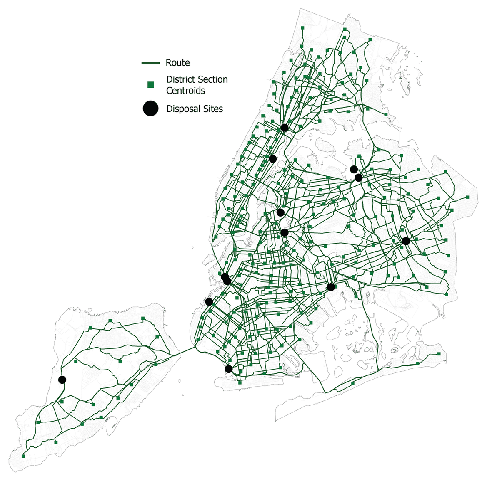
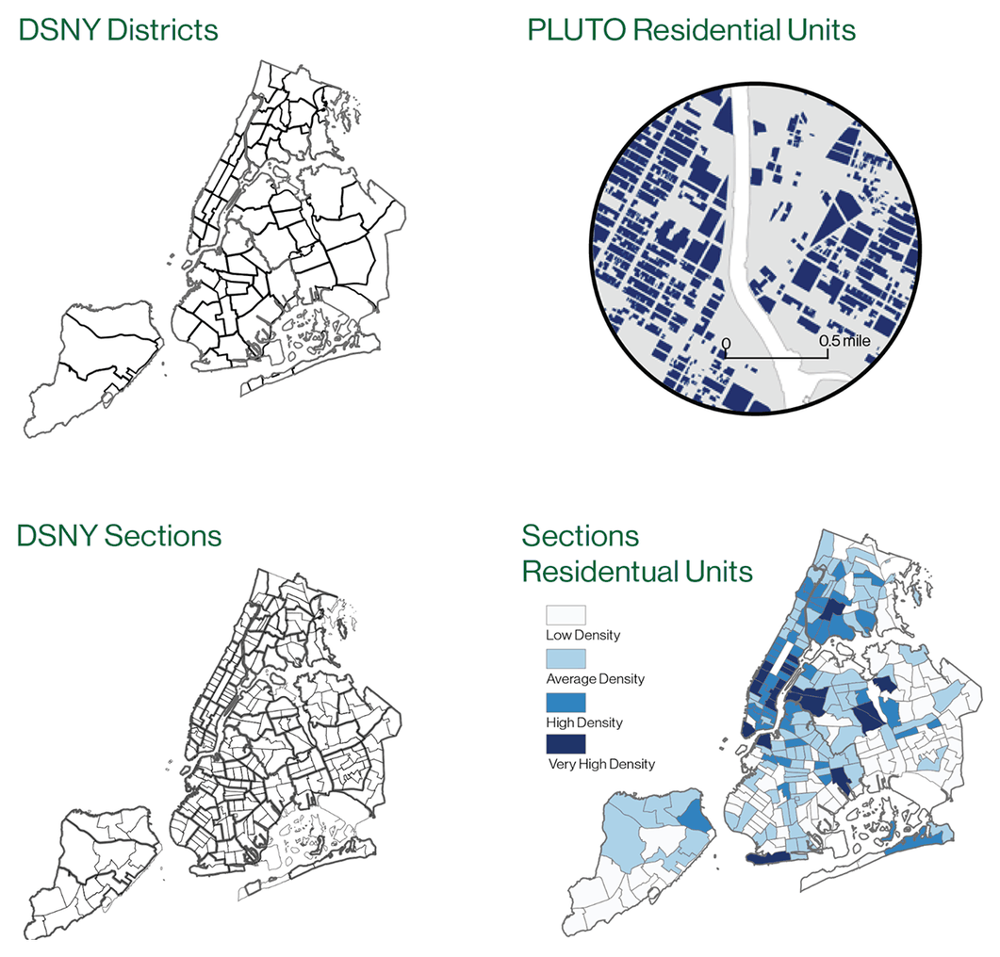
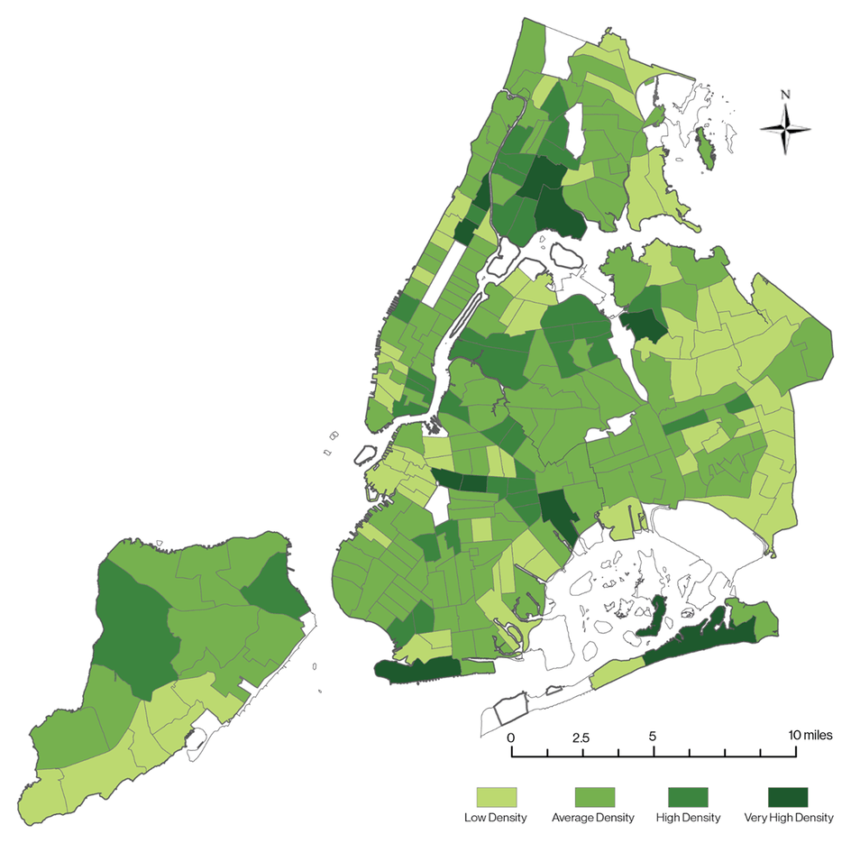
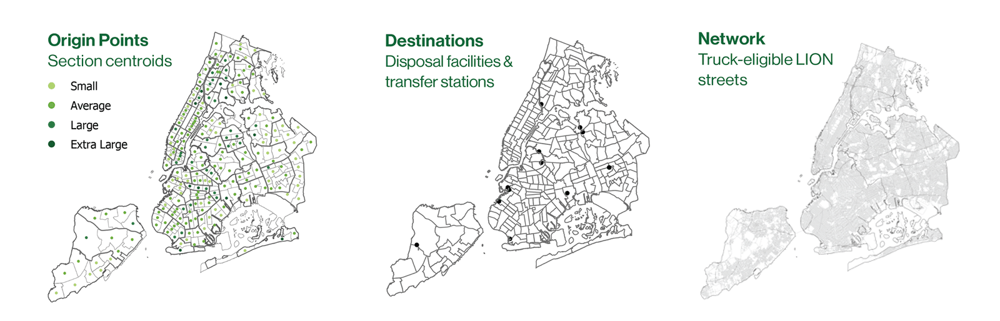
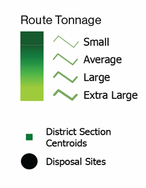
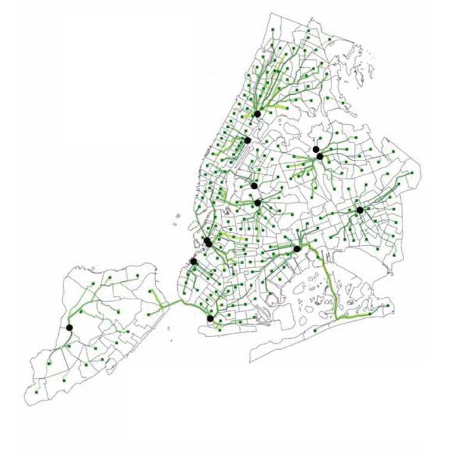
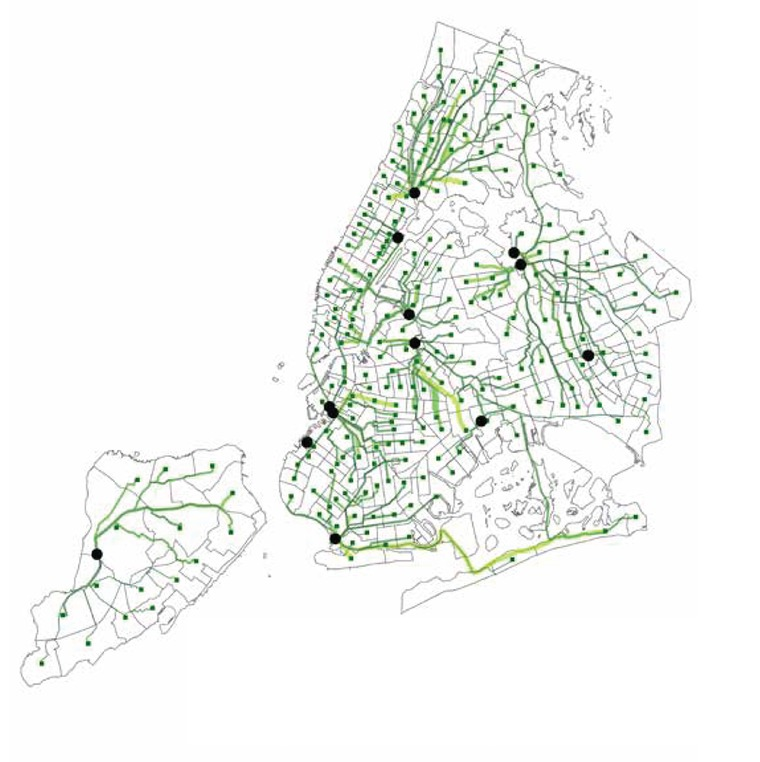
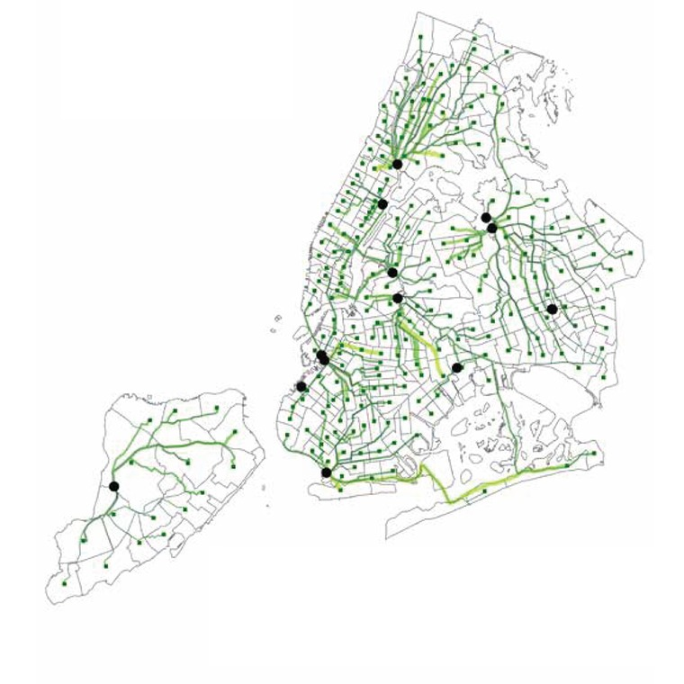
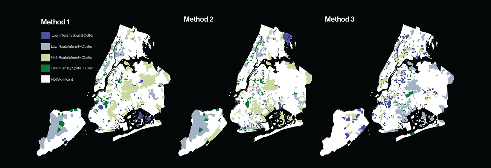
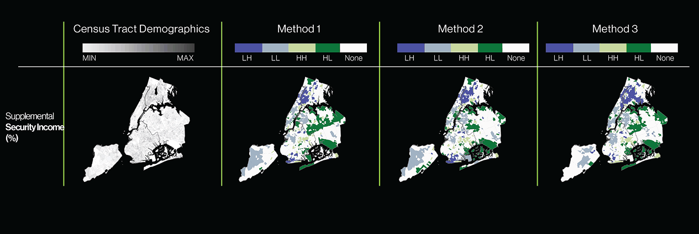

Modeling Residential Waste Transportation in New York City
The city reports how much waste each district produces. It does not publish how that waste moves. I built three routing models over the same street network to test what different assumptions produce.
- Type
- Academic research
Advanced GIS, Barnard College - Role
- Co-author. Data pipeline, routing models, spatial statistics, cartography
- Collaborator
- Nina Feldman
- Tools
- ArcGIS Pro · Network Analyst · Python
- Statistics
- Local Moran’s I · Lee’s L

- Question
- How do different routing assumptions change the modeled geography of waste transport, and where do the resulting corridors fall?
- Approach
- One fixed truck network and one candidate route set. Three assignment rules. Compared with Local Moran’s I and Lee’s L.
- Result
- The three rules produce materially different maps, but four corridors persist across all of them. The most flexible rule clustered the hardest.
Premise
Public data gives tonnage per district and the location of every facility. The movement between them is missing.
Sanitation is one of the most visible infrastructural systems in New York and one of the least documented at route level. You can find out how many tons a district produced last month. You cannot find out how those tons travelled.
That absence has analytical consequences. Represented only as an aggregate quantity per district, the spatial cost of moving waste disappears. Route intensity, corridor exposure, and any relationship between transport patterns and demographic conditions become impossible to examine.
The Department of Sanitation’s operational routes are not public, so this project does not try to reconstruct them. It models three plausible routing logics and compares them. The comparison is the experiment.
What do different routing assumptions produce when you follow each one all the way through to a map?
Research questionData preparation
District tonnage pushed down to sections, weighted by residential units.
DSNY reports refuse tonnage by district. Districts are too coarse to act as collection origins, so tonnage has to be distributed to district sections, the finer operational unit.
I aggregated residential unit counts from MapPLUTO at both scales, then allocated each district’s annual tonnage across its sections in proportion to residential share. Section centroids became the modeled route origins.
- First assumption
- Residential units stand in for waste generation, which assumes relative uniformity within a district.
- Known distortion
- Filling smaller units from a larger aggregate introduces the Modifiable Areal Unit Problem. Every downstream number is a modeled approximation.


Network construction
A truck-eligible street network, and five candidate facilities for every origin.
I built a truck-eligible road network from NYC LION street centerlines in ArcGIS Pro, then ran a closest-facility analysis from every section centroid to its five nearest disposal or transfer facilities.
That output is the routing universe, the constrained set of possibilities all three methodologies draw from. Fixing it first is what makes the later comparison fair: the three models differ only in how they select from this set.
Staten Island is the clearest constraint in the network. A sparse loop tied to a single facility, with one long connection over the Verrazzano that no routing logic can avoid.

Three routing models
Same city, same network, same candidate routes. Three rules for assigning tonnage to facilities.
Each model resolves the same question differently. Method 1 optimizes for proximity alone. Method 2 introduces facility capacity through a Python optimization routine. Method 3 drops single-facility assignment and splits each section’s tonnage across two facilities.
Routes were then buffered 25 ft, clipped to census tracts, and weighted by tonnage and length within each tract. That route intensity surface is the unit of every analysis that follows.




Spatial clustering
Local Moran’s I on tract-level route intensity, run separately for each method.

Four areas surface under every model: the South Bronx, Upper Manhattan, Staten Island, and parts of North Brooklyn. Because they persist across three different assignment rules, they point to facility siting and network topology rather than to any one routing logic.
The differences are equally informative. Method 1 fragments intensity radially around many destinations. Method 2 consolidates it near larger facilities. Method 3 distributes waste across more facilities and still produces the strongest clustering of the three.
Splitting tonnage across more facilities produced the strongest corridor concentration of the three.
Finding · Method 3Demographic association
Lee’s L measures bivariate spatial association between route intensity and demographic surfaces.

One result has to be read carefully. Total population correlates with route intensity partly by construction, since residential units were the proxy used to allocate tonnage in the first place. Reporting that as a finding would be circular, so I set it aside.
The Supplemental Security Income surface is the interpretively useful one. Under all three methods, modeled route intensity co-occurs with areas of socioeconomic vulnerability, particularly in the South Bronx, North Brooklyn, and Southeast Queens.
This identifies a spatial coincidence in a modeled surface. It does not establish exposure, health burden, or causation.
Limitations
When the operational system is hidden, the model is a structured hypothesis. These are its terms.
- Proxy allocation. Section tonnage is estimated from residential units. MAUP uncertainty carries through everything downstream.
- Centroids are not pickup points. They compress the distributed reality of curbside collection into one origin per section.
- Static shortest paths. The models ignore truck capacity, traffic, time-of-day routing, sanitation schedules, marine transfer timing, garage locations, and collection sequencing.
- First-degree destinations only. Many facilities modeled here are transfer stations rather than final disposal. Waste geography beyond city limits is out of scope.
Outcome
The divergence between the three models is the result the project reports.
Assumptions become geographies
Three defensible routing rules over identical data produced materially different maps of where the city’s waste burden falls.
Some structure is fixed
Corridors that persist across all methods mark where facility siting and network topology constrain the outcome regardless of routing logic.
Opacity has method consequences
Where operational systems are not public, modeling choices quietly become analytical claims. Naming them is part of the work.
The approach generalizes to any partially inaccessible infrastructure: build several defensible models, compare them honestly, and treat the divergence between them as evidence about the method. The geographies that become visible are inseparable from the assumptions used to construct them.